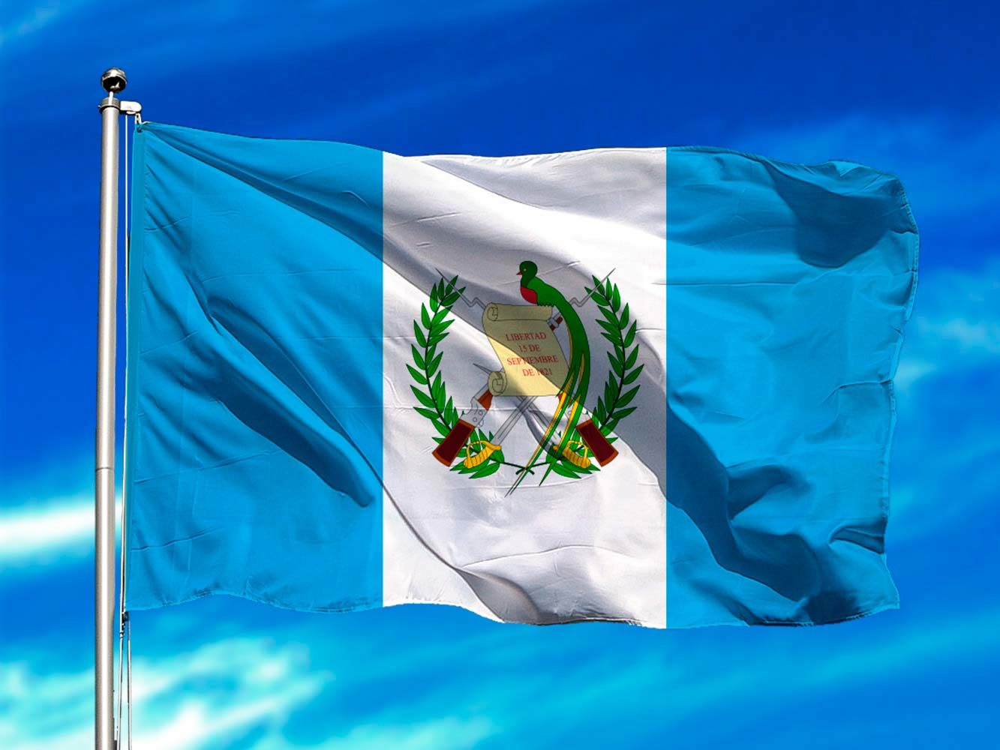

La bandera de Guatemala es el emblema e insignia suprema de la República de Guatemala y ha sufrido transformaciones desde incluso antes de la la creación de la república el 21 de marzo de 1847.1 Originalmente fue creada por el gobierno conservador del
general Rafael Carrera y Turcios basado en la propuesta del obispo Juan José de Aycinena y Piñol y otros miembros del Clan Aycinena quienes querían enfatizar la influencia conservadora en Guatemala manteniendo elementos españoles en la bandera.
Tras la muerte de Carrera y de los principales miembros del clan Aycinena entre 1860 y 1865 la influencia conservadora se debilitó en Guatemala y su gobierno fue finalmente derrocado por la revolución liberal el 30 de junio de 1871 dirigida por Miguel
García Granados y Justo Rufino Barrios, quienes entre sus primeros decretos modificaron la bandera de Guatemala para eliminar las referencias conservadoras. De acuerdo al decreto ejecutivo del 17 de agosto de 1871, se determinó que la bandera
tuviera únicamente dos colores: el azul celeste y el blanco. La franja vertical blanca entre las dos celestes representa el hecho de que el país se encuentra entre el océano Pacífico al Oeste y el mar Caribe al Este.
En su centro aparece el Escudo Nacional, -que también fue modificado para remover los elementos conservadores y la fecha 21 de marzo de 1847, que corresponde a la fundación de la República de Guatemala y el fin de la Federación Centroamericana con
la que habían soñado los liberales-.a El color blanco también representa la pureza, la integridad, la fe, la obediencia, la firmeza, la vigilancia, la paz y la nación. El color azul simboliza la justicia, la lealtad, la dulzura, la fortaleza,
el cielo guatemalteco y los dos mares citados que bañan las costas del este y oeste del país, respectivamente, al igual que las de Centroamérica. El diseño liberal está basado en la bandera de las Provincias Unidas del Centro de América que a
su vez se basaba en la bandera de las Provincias Unidas del Río de la Plata, actual Argentina, aunque en esta última las franjas son horizontales, y las franjas exteriores son azules, no celestes.
Las banderas de los otros países que conformaron las Provincias Unidas del Centro de América siguen este patrón. Finalmente el acuerdo gubernativo del 12 de septiembre de 1968 reglamenta en detalle los colores la densidad y colocación de los mismos
en la bandera y el escudo nacionales. Este reglamento se estableció durante el gobierno del Licenciado Julio César Méndez Montenegro. A la bandera se le llama pabellón cuando lleva el escudo de armas y los colores oficiales. En actos oficiales
se suele acompañar la entrada de la bandera con la marcha "La Granadera", versión instrumental.
